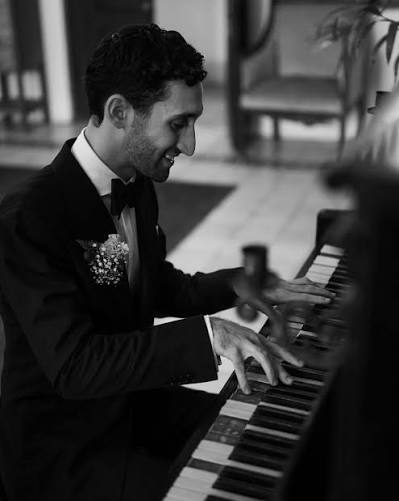

International Chazzan · Cantor · Jewish Music Educator
Bringing Jewish music to congregations, concerts, and communities around the world — from Tel Aviv to Dubai, New York to Denver.
Around the World
Edan has led services, concerts, and wedding ceremonies for Jewish communities across continents — from singing for the Queen of Denmark to honoring peace through the Abraham Accords in Dubai, from Norway's ancient Jewish communities to Tel Aviv's thriving cultural scene. His gift lies in engaging diverse communities and weaving his own artistry with local traditions, creating moments that resonate far beyond a single performance.
Watch & ListenBiography
Edan Tamler is an international chazzan/cantor, and vocalist, leading High Holidays, weddings, and concerts for communities across the world. From 2019, he served as Chief Cantor of the Great Synagogue in Copenhagen — one of the youngest cantors to hold the post. He now also holds Cantor-in-Residence posts in Dubai and Denver, Colorado, and performs and teaches for congregations worldwide. Everywhere he goes, Edan brings a fun, Israeli musical energy that incorporates modern Israeli music with classical liturgical song, making his visits memorable for people of all ages.
Born in New York City and raised in Jamaica Estates, Queens, Edan moved to Israel with his family at fifteen and quickly found his way onto the country's biggest stage — as lead singer of Fusion, the band assembled around him on Israel's first season of X Factor, reaching the finals before signing a development deal with musician Ivri Lider. He went on to spend three years as lead singer of the IDF Orchestra, serving as the ceremonial voice of Israel's national memorial and celebration ceremonies, before training as a cantor under IDF Chief Cantor Shai Abramson and the celebrated Naftali Hershtik at the Tel Aviv Cantorial Institute — a path that blends classical chazzanut with the instincts of a working performer. Edan is also a Jewish music educator, with experience in both formal school and informal camp settings. He lives with his wife Rachel and their son in Tel Aviv.
Weddings

Making your chuppah musically meaningful. Edan specializes in chuppah ceremonies for high-end, intimate weddings — traveling anywhere in the world to sing yours. He performs seamlessly with your existing band, or brings his own musicians for a fully arranged ceremony.
Performances & Recordings
Workshops & Education
Press & Media
Available Worldwide
Inquire for your community, simcha, or event. Edan would love to hear from you!
Send Inquiry